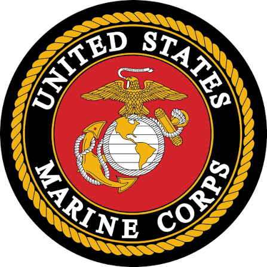

Military Experience
I serve in the United States Marine Corps Reserve as an Ammunition Technician. My experience has helped me develop discipline, leadership, teamwork, responsibility, and the ability to perform under pressure.
My name is Chandler Meeks-Jenkins. I am currently studying Information Technology and working toward building a strong career in the technology field. I enjoy learning new skills, solving problems, and finding ways to improve myself both professionally and personally.

I serve in the United States Marine Corps Reserve as an Ammunition Technician. My experience has helped me develop discipline, leadership, teamwork, responsibility, and the ability to perform under pressure.
I have experience working in technical and hands-on environments. These experiences taught me how to follow detailed procedures, use tools, solve problems, communicate with others, and complete important tasks safely and correctly.
I am interested in several areas of technology because I want a career that allows me to keep learning and work on meaningful problems.
My goal is to complete my degree, continue gaining hands-on experience, and prepare myself for a successful career in cybersecurity or data analytics.
I am motivated by my family, my future, and my desire to create more opportunities for myself. I believe learning technology can help me build financial stability, grow professionally, and create a better future.